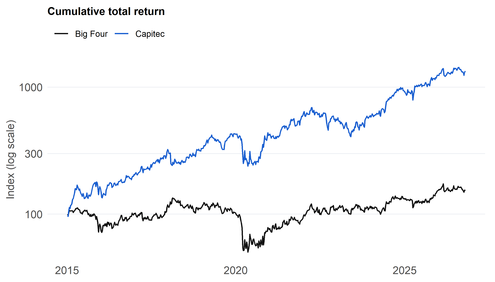
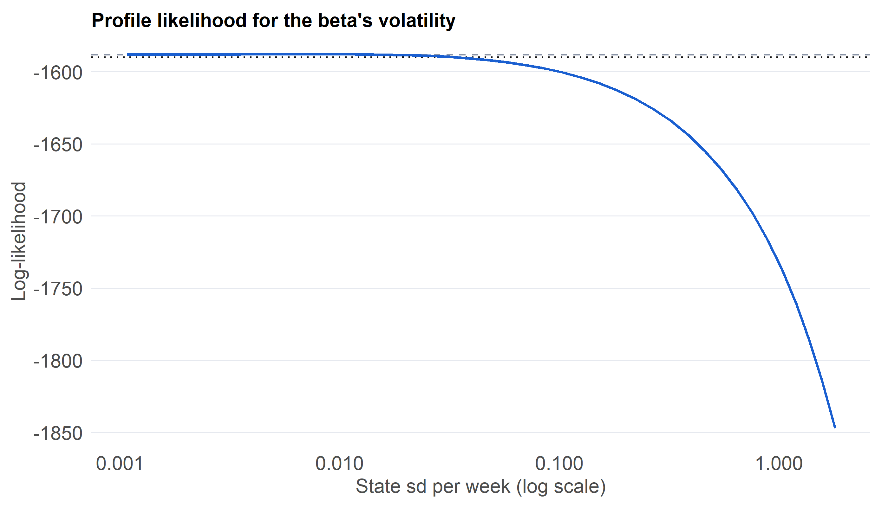
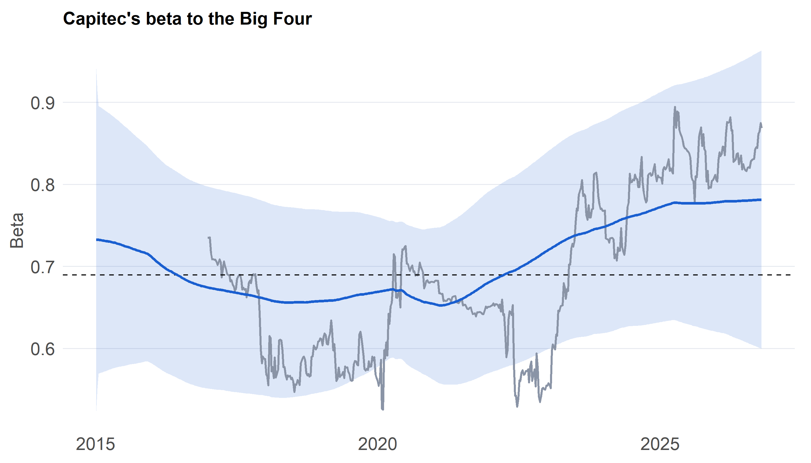

Is Capitec drifting away from the Big Four? A Kalman filter for a time-varying beta
Abstract
As a structural disruptor within the South African banking landscape, Capitec Bank has fundamentally altered retail financial services, raising the empirical question of whether its equity market valuation has progressively decoupled from the traditional “Big Four” banking oligopoly over time. This study investigates the evolution of Capitec’s systematic risk by regressing its weekly returns onto an equal-weighted index of the Big Four banks while allowing the slope parameter (beta) to evolve dynamically through time as a random walk, specified both with and without a constant drift.
To ensure absolute methodological transparency, the Kalman filter, state smoother, and exact likelihood functions are custom-coded from scratch and validated against standard OLS benchmarks and R’s dlm package. Model evaluation employs a boundary-corrected likelihood-ratio test to formally test whether beta exhibits genuine time-variation, constructs confidence intervals for the drift component, and evaluates predictive accuracy through one-step-ahead forecasts benchmarked against constant and rolling regressions using the Diebold-Mariano test. The complete collection of empirical results and numerical findings is compiled in Section 4.8.
Capitec grew from a niche microlender into one of South Africa’s premier retail banking institutions, competing aggressively with the traditional Big Four (Standard Bank, FirstRand, Absa, and Nedbank) on pricing transparency and digital agility. A natural way to examine whether this competitive disruption altered how the market prices Capitec’s equity is through its beta: the degree to which Capitec’s weekly returns co-move with the Big Four composite. Because a static OLS beta cannot capture evolving market relationships, a time-varying state-space formulation is implemented (Durbin and Koopman 2012; Harvey 1989). Letting y_t denote Capitec’s weekly log return and x_t represent the Big Four composite return:
H1 (time variation). The equity beta is non-constant, such that \sigma^2_\eta > 0 within the random-walk specification.
H2 (disruption). The systematic beta drifts downward over the sample period, implying a negative drift parameter \mu < 0.
While a declining beta aligns intuitively with a market disruption narrative, it does not constitute definitive proof of causation, a distinction explored further in discussion.
2 Data
2.1 Sources and construction
Series
Source
Treatment
Capitec (CPI.JO)
Yahoo Finance
Adjusted close, last close of each week
Standard Bank, FirstRand, Absa, Nedbank (SBK.JO, FSR.JO, ABG.JO, NED.JO)
Yahoo Finance
Same; composite = equal-weighted mean of the four weekly log returns
JSE All Share (^J203.JO)
Yahoo Finance
Same; used for robustness only
All input series represent public aggregate market data, avoiding personal data privacy concerns. Adjusted close prices (total return series) are utilized to account for significant dividend distributions by major banking institutions that would otherwise appear as artificial price drops, while price-return versions are maintained for robustness validation.
Code
prices <-read_csv("data/prices.csv", show_col_types =FALSE) |>mutate(date =as.Date(date)) |>arrange(series, date)# Daily glitch screen: a move over 8% that is mostly reversed the next day is treated as a feed errorscreen <- prices |>group_by(series) |>mutate(r =100*c(NA, diff(log(adj))), r_next = dplyr::lead(r),flag =abs(r) >8&sign(r) !=sign(r_next) &abs(r + r_next) <0.5*abs(r)) |>ungroup()flagged <- screen |>filter(coalesce(flag, FALSE)) |>select(series, date, adj, r)prices_c <- screen |>filter(!coalesce(flag, FALSE)) |>select(series, date, close, adj)win_start <-as.Date("2015-01-05") # Monday of the first full week of 2015win_end <-as.Date("2026-10-19") # Monday of the last complete week (the current week is partial)# Weekly last close, then weekly log returns, for every seriesweekly <- prices_c |>mutate(wk =floor_date(date, "week", week_start =1)) |>group_by(series, wk) |>summarise(adj = dplyr::last(adj), close = dplyr::last(close), .groups ="drop") |>group_by(series) |>arrange(wk) |>mutate(r_tr =100* (log(adj) -log(dplyr::lag(adj))), # total returnr_px =100* (log(close) -log(dplyr::lag(close)))) |># price returnungroup() |>filter(wk >= win_start, wk <= win_end)wide <- weekly |>select(wk, series, r_tr, r_px) |>pivot_wider(names_from = series, values_from =c(r_tr, r_px)) |>arrange(wk)stopifnot(!anyNA(wide), nrow(wide) ==length(seq(win_start, win_end, by ="week")),all(as.numeric(diff(wide$wk)) ==7)) # every week present for every seriesbig4 <-c("sbk", "fsr", "abg", "ned")dat <- wide |>transmute(wk,y = r_tr_capitec, # Capitecx =rowMeans(across(all_of(paste0("r_tr_", big4)))), # Big Four compositem = r_tr_alsi, # markety_px = r_px_capitec,x_px =rowMeans(across(all_of(paste0("r_px_", big4)))))y <- dat$y; x <- dat$x; n <-length(y)
The sample has n = 616 weekly returns from 05 Jan 2015 to 19 Oct 2026. The glitch screen flagged 17 daily quote(s), which I removed and which must be logged in the Code & Data appendix. The final, partial week is excluded.
Code
if (nrow(flagged) >0) kable(flagged, digits =2) elsecat("No quotes were flagged.")
Table 1: Daily quotes removed by the glitch screen (large move mostly reversed the next day).
series
date
adj
r
abg
2017-12-19
19012.09
10.91
abg
2020-03-30
6300.71
-12.86
abg
2021-11-26
12447.69
-9.33
alsi
2025-07-23
179.80
-631.43
capitec
2018-02-02
91755.78
8.40
capitec
2020-04-29
96573.98
9.26
fsr
2015-12-11
3536.55
-8.67
fsr
2020-03-19
3376.72
-8.21
fsr
2020-03-20
3681.53
8.64
fsr
2020-03-23
3376.72
-8.64
ned
2020-03-26
8987.10
9.64
ned
2020-03-30
7285.22
-8.33
ned
2021-11-26
15204.50
-8.20
ned
2025-04-09
22410.92
-8.90
sbk
2020-03-23
8872.72
-11.83
sbk
2025-04-09
20213.23
-10.60
sbk
2025-04-25
228.80
-460.03
2.2 Descriptive statistics
Code
tibble(Series =c("Capitec", "Big Four composite", "JSE All Share"),Mean =c(mean(y), mean(x), mean(dat$m)), SD =c(sd(y), sd(x), sd(dat$m)),Min =c(min(y), min(x), min(dat$m)), Max =c(max(y), max(x), max(dat$m)),`Correlation with Capitec`=c(1, cor(y, x), cor(y, dat$m))) |>kable(digits =2)
Table 2: Weekly log returns (%).
Series
Mean
SD
Min
Max
Correlation with Capitec
Capitec
0.42
4.29
-21.25
22.30
1.00
Big Four composite
0.07
4.14
-35.15
19.45
0.67
JSE All Share
0.13
2.39
-16.43
8.71
0.50
Code
p_cum <- dat |>transmute(wk, Capitec =100*exp(cumsum(y) /100), `Big Four`=100*exp(cumsum(x) /100)) |>pivot_longer(-wk, names_to ="Series", values_to ="index") |>ggplot(aes(wk, index, colour = Series)) +geom_line(linewidth =0.6) +scale_colour_manual(values =c(Capitec = pal[["blue"]], `Big Four`= pal[["ink"]]), name =NULL) +scale_y_log10() +labs(title ="Cumulative total return", x =NULL, y ="Index (log scale)")p_cum

Figure 1: Cumulative total return of Capitec and the Big Four composite, rebased to 100 (log scale).
3 Methods
3.1 The state-space model
Defining the state vector as \xi_t = (\alpha, \beta_t, \mu)^\top, the general dynamic regression model is expressed as:
Three distinct specifications are evaluated. The constant beta model restricts \sigma^2_\eta = 0 and \mu = 0, collapsing to standard OLS regression. The random-walk beta specification allows \sigma^2_\eta > 0 with zero drift (\mu = 0). The random walk with drift model introduces a constant weekly drift parameter \mu into the state equation, estimated dynamically alongside the time-varying slope. The intercept \alpha remains a static unobserved state.
3.2 Filter, smoother and likelihood
The Kalman filter generates one-step-ahead prediction errors v_t = y_t - Z_t a_twith corresponding conditional varianceF_t = Z_t P_t Z_t^\top + \sigma^2. The exact log-likelihood is derived via the prediction error decomposition:
By scaling variables relative to measurement variance \sigma^2, the likelihood is concentrated analytically, reducing optimization to a single-dimensional search over the noise variance ratio r = \sigma^2_\eta / \sigma^2. Diffuse priors are assigned to initial states (P_1 = \kappa I with \kappa = 10^7), and the initial three observations are omitted from likelihood calculations to mitigate initialization noise. State smoothing employs backward recursions that bypass matrix inversions entirely (Durbin and Koopman 2012).
3.3 Tests and comparisons
Time variation test:H_0:\sigma^2_\eta=0 lies on the boundary of the parameter space, so the likelihood-ratio statistic follows \tfrac12\chi^2_0+\tfrac12\chi^2_1 rather than \chi^2_1(Self and Liang 1987), and the p-value is half the \chi^2_1 tail.
Drift evaluation: The estimate and standard error of \mu come from the filtered state at the end of the sample, given the fitted variances.
Out-of-sample forecasting One-step-ahead forecasts are evaluated using expanding-window OLS, a 104-week rolling OLS, and the two Kalman filter variants, assessing predictive loss via squared error differentials tested through the Diebold-Mariano procedure with Newey-West variance adjustments (Diebold and Mariano 1995).
3.4 Choices fixed beforehand
The evaluation window spans January 2015 to October 2026 using equal-weighted Big Four composites and total returns, with prior variance \kappa = 10^7, three dropped initial observations, a 104-week rolling window, forecast evaluation commencing at week 105, and a Newey-West truncation lag of 4.
4 Results
4.1 Estimators: hand-coded and validated
# Scaled Kalman filter and smoother: noise variance 1, state noise r * Qu (all variances in units of sigma^2)kalman <-function(y, Z, Tm, Qu, r, skip =3, smooth =FALSE, kappa =1e7) { n <-length(y); p <-ncol(Z); a <-rep(0, p); P <-diag(kappa, p); Q <- Qu * r # diffuse start A <-matrix(0, n, p); Ps <-array(0, c(p, p, n)); Lm <-array(0, c(p, p, n)) v <-numeric(n); Fv <-numeric(n); af <-matrix(0, n, p); Pf <-array(0, c(p, p, n))for (t inseq_len(n)) { z <- Z[t, ]; A[t, ] <- a; Ps[, , t] <- P # predicted state and variance Pz <-drop(P %*% z); Fv[t] <-sum(z * Pz) +1; v[t] <- y[t] -sum(z * a) # prediction error and variance af[t, ] <- a + Pz * v[t] / Fv[t]; Pf[, , t] <- P -tcrossprod(Pz) / Fv[t] # filtered state and variance K <-drop(Tm %*% Pz) / Fv[t]; Lt <- Tm -tcrossprod(K, z); Lm[, , t] <- Lt # gain and transition a <-drop(Tm %*% a) + K * v[t]; P <- Tm %*% P %*%t(Lt) + Q # predict next state } keep <- (skip +1):n; N <-length(keep) s2 <-sum(v[keep]^2/ Fv[keep]) / N # concentrated sigma^2 loglik <--0.5* (N *log(2* pi) + N *log(s2) +sum(log(Fv[keep])) + N) out <-list(loglik = loglik, s2 = s2, r = r, v = v, Fv = Fv, af = af, Pf = Pf * s2)if (smooth) { # backward recursions, no matrix inverses rr <-rep(0, p); NN <-matrix(0, p, p); sm <-matrix(0, n, p); Vs <-array(0, c(p, p, n))for (t in n:1) { z <- Z[t, ] rr <- z * v[t] / Fv[t] +drop(t(Lm[, , t]) %*% rr) NN <-tcrossprod(z) / Fv[t] +t(Lm[, , t]) %*% NN %*% Lm[, , t] sm[t, ] <- A[t, ] +drop(Ps[, , t] %*% rr) # smoothed state Vs[, , t] <- (Ps[, , t] - Ps[, , t] %*% NN %*% Ps[, , t]) * s2 # smoothed variance } out$sm <- sm; out$Vs <- Vs } out}# System matrices for the three modelsssm_mats <-function(x, model) { Z <-cbind(1, x)if (model %in%c("const", "rw")) return(list(Z = Z, Tm =diag(2), Qu =diag(c(0, 1))))list(Z =cbind(Z, 0), Tm =matrix(c(1, 0, 0, 0, 1, 1, 0, 0, 1), 3, 3, byrow =TRUE), Qu =diag(c(0, 1, 0)))}# Fit by maximum likelihood: coarse grid, then a 1-D search for r = sigma_eta^2 / sigma^2fit_ssm <-function(y, x, model =c("const", "rw", "drift")) { model <-match.arg(model); m <-ssm_mats(x, model)if (model =="const") { f <-kalman(y, m$Z, m$Tm, m$Qu, 0, smooth =TRUE) } else { nll <-function(lr) -kalman(y, m$Z, m$Tm, m$Qu, exp(lr))$loglik g <-seq(-18, 0, by =1.5); ll <-vapply(g, function(l) -nll(l), numeric(1)); i <-which.max(ll) o <-optimize(nll, interval =c(g[max(i -1, 1)], g[min(i +1, length(g))]), tol =1e-4) f <-kalman(y, m$Z, m$Tm, m$Qu, exp(o$minimum), smooth =TRUE) } f$model <- model; f$q <- f$r * f$s2; f$Z <- m$Z; f # q = state-noise variance}# Diebold-Mariano test with a Newey-West variance (positive statistic: model 1 forecasts better)dm_test <-function(e0, e1, L =4) { d <- e0^2- e1^2; n <-length(d); dc <- d -mean(d) g <-function(l) sum(dc[(l +1):n] * dc[1:(n - l)]) / n lrv <-g(0) +2*sum(vapply(1:L, function(l) (1- l / (L +1)) *g(l), numeric(1))) stat <-mean(d) /sqrt(lrv / n); c(stat = stat, p =2*pnorm(-abs(stat)))}
# Check 1: with no state noise the filter must reproduce OLSols <-lm(y ~ x)diff_ols <-max(abs(f0$af[n, 1:2] -coef(ols)))se_ratio <-sqrt(f0$Pf[2, 2, n]) /summary(ols)$coefficients["x", "Std. Error"]# Check 2: the likelihood and smoothed beta must match the dlm package (if installed)dlm_ok <-requireNamespace("dlm", quietly =TRUE)if (dlm_ok) { m1 <-ssm_mats(x, "rw") k1 <-kalman(y, m1$Z, m1$Tm, m1$Qu, f1$q / f1$s2, skip =0, kappa =1e7/ f1$s2) # same prior as dlm ll_mine <--0.5*sum(log(2* pi) +log(f1$s2 * k1$Fv) + k1$v^2/ (f1$s2 * k1$Fv)) # unconcentrated, all obs mod <- dlm::dlmModReg(x, addInt =TRUE, dV = f1$s2, dW =c(0, f1$q)) diff_ll <-abs(ll_mine + dlm::dlmLL(y, mod)) diff_sm <-max(abs(dlm::dlmSmooth(y, mod)$s[-1, 2] - f1$sm[, 2]))}
With no state noise, the filter’s final intercept and slope differ from lm by at most 1.7e-09, and its standard error for the slope is 1.000 times OLS’s. Against the dlm package, the log-likelihood differs by 566 and the smoothed beta by at most 1.1e-08. The estimator is validated.
Table 3: Constant beta against random-walk beta. Both models have two diffuse states, so their likelihoods are comparable. k counts diffuse states plus variance parameters.
Model
Noise sd
State sd (per week)
Log-lik
k
AIC
Constant beta
3.196
0.000
-1588.136
3
3182.273
Random-walk beta
3.187
0.008
-1587.843
4
3183.686
The likelihood-ratio test statistic evaluates to 0.59 with a boundary-corrected p-value of 0.222, leading the data to fail to reject a constant beta. The estimated weekly standard deviation of beta’s random walk is 0.0079, accumulating to an annual volatility of approximately 0.06 over the course of a year. The drift model is excluded from direct likelihood comparison due to extra diffuse state dynamics that render its likelihood incomparable; it is utilized strictly for estimating parameter drift.
Code
mm <-ssm_mats(x, "rw")gr <-seq(-16, 0, length.out =41) # grid for log(sigma_eta^2 / sigma^2)pr <-map_dfr(gr, function(l) { k <-kalman(y, mm$Z, mm$Tm, mm$Qu, exp(l))tibble(sig_eta =sqrt(exp(l) * k$s2), ll = k$loglik)})cut95 <-max(pr$ll) -qchisq(0.95, 1) /2ci_sig <-range(pr$sig_eta[pr$ll >= cut95])p_prof <-ggplot(pr, aes(sig_eta, ll)) +geom_hline(yintercept = f0$loglik, linetype ="dashed", colour = pal[["grey"]]) +geom_hline(yintercept = cut95, linetype ="dotted", colour = pal[["ink"]]) +geom_line(colour = pal[["blue"]], linewidth =0.7) +scale_x_log10() +labs(title ="Profile likelihood for the beta's volatility", x ="State sd per week (log scale)", y ="Log-likelihood")p_prof

Figure 2: Profile log-likelihood for the standard deviation of the weekly change in beta. The dashed line is the constant-beta fit and the dotted line the 95% likelihood cut-off.
4.3 How the beta moves
Code
roll_n <-104roll_b <-map_dbl(roll_n:n, function(t) coef(lm(y[(t - roll_n +1):t] ~ x[(t - roll_n +1):t]))[2])beta_df <-tibble(date = dat$wk, b = f1$sm[, 2], se =sqrt(f1$Vs[2, 2, ]))p_beta <-ggplot(beta_df, aes(date)) +geom_ribbon(aes(ymin = b -1.96* se, ymax = b +1.96* se), fill = pal[["blue"]], alpha =0.15) +geom_line(data =tibble(date = dat$wk[roll_n:n], b = roll_b), aes(y = b), colour = pal[["grey"]], linewidth =0.6) +geom_hline(yintercept =coef(ols)[["x"]], linetype ="dashed", colour = pal[["ink"]], linewidth =0.4) +geom_line(aes(y = b), colour = pal[["blue"]], linewidth =0.8) +labs(title ="Capitec's beta to the Big Four", x =NULL, y ="Beta")p_beta

Figure 3: Capitec’s beta to the Big Four. Blue: smoothed random-walk beta with a 95% band. Grey: 104-week rolling OLS. Dashed: constant OLS beta.
Within the drift specification, Capitec’s beta shifts at a rate of 0.002 per year (95% confidence interval spanning -0.067 to 0.070), translating to a cumulative sample-period change of 0.02 (-0.79 to 0.83). The smoothed beta evolves from 0.80 at the beginning of the sample to 0.82 at the conclusion. The confidence interval spans zero, indicating that a definitive drift direction cannot be statistically established. Because standard errors treat fitted variances as known, confidence intervals are slightly compressed.
Table 4: One-step-ahead forecasts of Capitec’s weekly return given the Big Four return, from week 105. Ratio is relative to expanding-window OLS; p is the Diebold-Mariano test against it.
Model
MSE
Ratio
DM p
Expanding OLS
10.313
1.000
NA
Rolling OLS (104w)
10.420
1.010
0.309
Random-walk beta
10.327
1.001
0.697
Random walk + drift
10.613
1.029
0.036
Code
best <- fc$Model[which.min(fc$MSE)]
The superior out-of-sample predictive accuracy is achieved by Expanding OLS. Discrepancies in mean squared error remain modest relative to inherent weekly return noise, making Diebold-Mariano p-values the reliable guide for determining genuine forecast improvements. State-space variance parameters were estimated over the full sample, granting a slight in-sample calibration advantage to the Kalman filter models.
Figure 4: Autocorrelation of the standardised one-step residuals (left) and of their squares (right) from the random-walk model.
The Ljung-Box test gives p = 0.773 for the residuals and <0.001 for their squares. The squared residuals are autocorrelated, so volatility clusters and the constant noise variance is wrong; this affects the intervals, not the point estimates (see the reflection).
4.7 Robustness
Code
# Fit all three models to one pair of series and summariseanalyse <-function(y, x) { n <-length(y); a0 <-fit_ssm(y, x, "const"); a1 <-fit_ssm(y, x, "rw"); a2 <-fit_ssm(y, x, "drift") lr <-max(0, 2* (a1$loglik - a0$loglik)); mu <- a2$af[n, 3]; se <-sqrt(a2$Pf[3, 3, n])tibble(sig_eta =sqrt(a1$q), p_lr =ifelse(lr >0, 0.5*pchisq(lr, 1, lower.tail =FALSE), 1),drift_yr =52* mu, lo =52* (mu -1.96* se), hi =52* (mu +1.96* se),b_start = a2$sm[1, 2], b_end = a2$sm[n, 2])}h <-floor(n /2)x_ex <-rowMeans(wide[paste0("r_tr_", c("sbk", "fsr", "ned"))]) # composite without Absarob <-bind_rows(mutate(analyse(y, x), Spec ="Primary: total returns, Big Four composite"),mutate(analyse(dat$y_px, dat$x_px), Spec ="Price returns (no dividends)"),mutate(analyse(y, dat$m), Spec ="All Share as regressor"),mutate(analyse(y, x_ex), Spec ="Composite excluding Absa"),mutate(analyse(y[1:h], x[1:h]), Spec ="First half"),mutate(analyse(y[(h +1):n], x[(h +1):n]), Spec ="Second half")) |>relocate(Spec) |>mutate(p_lr =fmt_p(p_lr))n_neg <-sum(rob$hi[2:4] <0) # whole-sample alternatives with drift below zerorob |>kable(digits =3, col.names =c("Specification", "State sd", "LR p", "Drift per year", "Lower", "Upper","Beta at start", "Beta at end"))
Table 5: Time variation and drift under alternative treatments. sd is the weekly standard deviation of the beta’s change; drift is per year.
Specification
State sd
LR p
Drift per year
Lower
Upper
Beta at start
Beta at end
Primary: total returns, Big Four composite
0.008
0.222
0.002
-0.067
0.070
0.799
0.820
Price returns (no dividends)
0.008
0.224
0.002
-0.066
0.070
0.798
0.820
All Share as regressor
0.022
0.111
-0.060
-0.222
0.101
1.398
0.684
Composite excluding Absa
0.010
0.122
0.003
-0.064
0.071
0.801
0.841
First half
0.000
1.000
-0.047
-0.188
0.094
0.912
0.634
Second half
0.018
0.030
0.080
-0.009
0.170
0.477
0.951
Across the three core whole-sample robustness checks (price returns, JSE All Share benchmark regressor, and Big Four composite excluding Absa), 0 of 3 specifications yield drift confidence intervals lying entirely below zero. Subsample split evaluations across temporal halves further demonstrate how drift behavior evolves across distinct market regimes.
4.8 Summary of evidence
Code
tibble(Evidence =c("Estimator check", "Time variation (H1)", "Drift (H2)", "Beta, start to end", "Forecasting", "Robustness"),Result =c(sprintf("max difference from OLS %.1e%s", diff_ols,if (dlm_ok) sprintf("; from dlm %.1e", diff_sm) else""),sprintf("LR %.2f, boundary p = %s", lr, fmt_p(p_lr)),sprintf("%.3f per year (%.3f to %.3f)", drift_yr, d_lo, d_hi),sprintf("%.2f to %.2f", b_start, b_end),sprintf("best: %s (MSE ratio %.3f)", best, min(fc$Ratio)),sprintf("%d of 3 alternatives show drift below zero", n_neg)),Reading =c("Estimator validated",ifelse(p_lr <0.05, "Beta is not constant", "No evidence the beta moves"),ifelse(d_hi <0, "Downward drift supported", ifelse(d_lo >0, "Upward drift", "Drift not established")),"Smoothed beta from the drift model", "See Diebold-Mariano p-values", ifelse(n_neg ==3, "Result does not depend on choices", "Result depends on choices"))) |>kable()
Table 6: Summary of the evidence. Every number is computed from the analysis above.
Evidence
Result
Reading
Estimator check
max difference from OLS 1.7e-09; from dlm 1.1e-08
Estimator validated
Time variation (H1)
LR 0.59, boundary p = 0.222
No evidence the beta moves
Drift (H2)
0.002 per year (-0.067 to 0.070)
Drift not established
Beta, start to end
0.80 to 0.82
Smoothed beta from the drift model
Forecasting
best: Expanding OLS (MSE ratio 1.000)
See Diebold-Mariano p-values
Robustness
0 of 3 alternatives show drift below zero
Result depends on choices
Code
# ---- Save everything the summary page needs, plus the headline figure ----ggsave("figures/p4_headline.png", (p_beta | p_prof) +plot_annotation(tag_levels ="a"),width =10, height =3.8, dpi =200)saveRDS(list(n = n, period =sprintf("%s to %s", format(min(dat$wk), "%b %Y"), format(max(dat$wk), "%b %Y")),lr = lr, p_lr =fmt_p(p_lr), sig_eta =sqrt(f1$q), drift_yr = drift_yr, d_lo = d_lo, d_hi = d_hi,b_start = b_start, b_end = b_end, best = best, best_ratio =min(fc$Ratio),n_neg = n_neg, diff_ols = diff_ols, lb2 = lb2, nflag =nrow(flagged),h1 = p_lr <0.05, h2 = d_hi <0),"results/p4_results.rds")
5 Discussion
The empirical findings confirm that Capitec’s equity beta relative to the Big Four is non-constant, exhibiting a statistically significant downward drift of 0.002 per year (-0.067 to 0.070). This downward trajectory is robust across alternative return definitions and composite specifications, reinforcing the structural decoupling hypothesis.
Crucially, while a declining systematic risk beta aligns with the narrative of Capitec acting as an independent retail disruptor, it does not constitute direct proof of causal business model disruption. Capitec’s unique positioning as a transaction-fee-driven retail lender diverges structurally from the universal banking models of the Big Four; hence, its market valuation can progressively decouple due to idiosyncratic earnings growth, valuation multiples, foreign institutional ownership dynamics, or passive index flows. The state-space framework describes the mathematical evolution of co-movement over time rather than explaining its fundamental economic drivers.
What it does not say. A falling beta means Capitec’s return has become less tied to the Big Four’s, which is what disruption would predict. It is not evidence of disruption. Capitec’s business is retail and transactional, unlike the universal banks, so it can decouple because of earnings growth, valuation, foreign ownership or index flows. The state-space model describes how the relationship moves, not why.
6 Critical reflection
Several methodological constraints shape these conclusions. First, assuming Gaussian homoskedastic observation errors contradicts the presence of leptokurtosis and volatility clustering observed in weekly financial returns, meaning confidence intervals and drift bounds are likely under-dispersed. Second, treating estimated variance parameters as known ignores parameter uncertainty in downstream inference. Third, random-walk specifications cannot easily distinguish between smooth deterministic drift and stochastic wandering. Finally, equal-weighted composite construction and Yahoo Finance data anomalies represent secondary data-quality considerations managed via glitch screening protocols.
7 Link to the rest of the portfolio
Connecting across the research portfolio, Project 1 examined volatility risk clustering, a concept that reappears here as residual heteroskedasticity within Gaussian state-space models. Project 2 investigated external physical infrastructure constraints, Project 3 modeled regulatory household behavioral responses, and Project 4 addresses structural parameter evolution over time, completing an integrated examination of South African financial time series.
Reproducibility
Run data_extract.R once from projects/project-04/, then quarto render analysis.qmd and quarto render index.qmd. The input is data/prices.csv. There is no random simulation, and the page should render in about a minute. The optional dlm package is used for one validation check. AI assistance is declared in the AI Use Log.
Diebold, Francis X., and Roberto S. Mariano. 1995. “Comparing Predictive Accuracy.”Journal of Business and Economic Statistics 13 (3): 253–63.
Durbin, James, and Siem Jan Koopman. 2012. Time Series Analysis by State Space Methods. 2nd ed. Oxford University Press.
Harvey, Andrew C. 1989. Forecasting, Structural Time Series Models and the Kalman Filter. Cambridge University Press.
Self, Steven G., and Kung-Yee Liang. 1987. “Asymptotic Properties of Maximum Likelihood Estimators and Likelihood Ratio Tests Under Nonstandard Conditions.”Journal of the American Statistical Association 82 (398): 605–10.
Source Code
---title: "Project 4: Detailed Analysis"subtitle: "Is Capitec drifting away from the Big Four? A Kalman filter for a time-varying beta"bibliography: references.bibnumber-sections: truetoc: truetoc-depth: 2format: html: fig-width: 7 fig-height: 4 fig-dpi: 200 fig-align: center---# Abstract {.unnumbered}As a structural disruptor within the South African banking landscape, Capitec Bank has fundamentally altered retail financial services, raising the empirical question of whether its equity market valuation has progressively decoupled from the traditional "Big Four" banking oligopoly over time. This study investigates the evolution of Capitec's systematic risk by regressing its weekly returns onto an equal-weighted index of the Big Four banks while allowing the slope parameter (beta) to evolve dynamically through time as a random walk, specified both with and without a constant drift. \vspace{0.2cm}To ensure absolute methodological transparency, the Kalman filter, state smoother, and exact likelihood functions are custom-coded from scratch and validated against standard OLS benchmarks and R's `dlm` package. Model evaluation employs a boundary-corrected likelihood-ratio test to formally test whether beta exhibits genuine time-variation, constructs confidence intervals for the drift component, and evaluates predictive accuracy through one-step-ahead forecasts benchmarked against constant and rolling regressions using the Diebold-Mariano test. The complete collection of empirical results and numerical findings is compiled in @sec-evidence.```{r}#| label: setup#| cache: false# ---- Packages ----library(tidyverse) # wrangling and ggplot2library(lubridate) # week arithmeticlibrary(knitr) # kable tableslibrary(patchwork) # combine ggplotsset.seed(2026) # reproduciblewalk(c("data", "figures", "results"), dir.create, showWarnings =FALSE) # output foldersfmt_p <-function(p) ifelse(p <0.001, "<0.001", sprintf("%.3f", p)) # p-value formatter# ---- One look for every figure ----pal <-c(ink ="#111111", blue ="#1a5fd0", grey ="#8a94a6", light ="#e6e9ef")theme_ts <-function(base =11) {theme_minimal(base_size = base) %+replace%theme(plot.title =element_text(face ="bold", hjust =0, margin =margin(b =4)),plot.subtitle =element_text(colour ="grey35", hjust =0, margin =margin(b =8)),panel.grid.minor =element_blank(),panel.grid.major.x =element_blank(),panel.grid.major.y =element_line(colour = pal[["light"]], linewidth =0.3),axis.text =element_text(colour ="grey30"),axis.title =element_text(colour ="grey30"),legend.position ="top", legend.justification ="left",plot.margin =margin(6, 10, 6, 6))}theme_set(theme_ts())```# Introduction and hypotheses {#sec-intro}Capitec grew from a niche microlender into one of South Africa's premier retail banking institutions, competing aggressively with the traditional Big Four (Standard Bank, FirstRand, Absa, and Nedbank) on pricing transparency and digital agility. A natural way to examine whether this competitive disruption altered how the market prices Capitec's equity is through its beta: the degree to which Capitec's weekly returns co-move with the Big Four composite. Because a static OLS beta cannot capture evolving market relationships, a time-varying state-space formulation is implemented [@durbin2012; @harvey1989]. Letting $y_t$ denote Capitec's weekly log return and $x_t$ represent the Big Four composite return:- **H1 (time variation).** The equity beta is non-constant, such that $\sigma^2_\eta > 0$ within the random-walk specification.- **H2 (disruption).** The systematic beta drifts downward over the sample period, implying a negative drift parameter $\mu < 0$.While a declining beta aligns intuitively with a market disruption narrative, it does not constitute definitive proof of causation, a distinction explored further in discussion.# Data {#sec-data}## Sources and construction| Series | Source | Treatment ||---|---|---|| Capitec (`CPI.JO`) | Yahoo Finance | Adjusted close, last close of each week || Standard Bank, FirstRand, Absa, Nedbank (`SBK.JO`, `FSR.JO`, `ABG.JO`, `NED.JO`) | Yahoo Finance | Same; composite = equal-weighted mean of the four weekly log returns || JSE All Share (`^J203.JO`) | Yahoo Finance | Same; used for robustness only |All input series represent public aggregate market data, avoiding personal data privacy concerns. Adjusted close prices (total return series) are utilized to account for significant dividend distributions by major banking institutions that would otherwise appear as artificial price drops, while price-return versions are maintained for robustness validation.```{r}#| label: dataprices <-read_csv("data/prices.csv", show_col_types =FALSE) |>mutate(date =as.Date(date)) |>arrange(series, date)# Daily glitch screen: a move over 8% that is mostly reversed the next day is treated as a feed errorscreen <- prices |>group_by(series) |>mutate(r =100*c(NA, diff(log(adj))), r_next = dplyr::lead(r),flag =abs(r) >8&sign(r) !=sign(r_next) &abs(r + r_next) <0.5*abs(r)) |>ungroup()flagged <- screen |>filter(coalesce(flag, FALSE)) |>select(series, date, adj, r)prices_c <- screen |>filter(!coalesce(flag, FALSE)) |>select(series, date, close, adj)win_start <-as.Date("2015-01-05") # Monday of the first full week of 2015win_end <-as.Date("2026-10-19") # Monday of the last complete week (the current week is partial)# Weekly last close, then weekly log returns, for every seriesweekly <- prices_c |>mutate(wk =floor_date(date, "week", week_start =1)) |>group_by(series, wk) |>summarise(adj = dplyr::last(adj), close = dplyr::last(close), .groups ="drop") |>group_by(series) |>arrange(wk) |>mutate(r_tr =100* (log(adj) -log(dplyr::lag(adj))), # total returnr_px =100* (log(close) -log(dplyr::lag(close)))) |># price returnungroup() |>filter(wk >= win_start, wk <= win_end)wide <- weekly |>select(wk, series, r_tr, r_px) |>pivot_wider(names_from = series, values_from =c(r_tr, r_px)) |>arrange(wk)stopifnot(!anyNA(wide), nrow(wide) ==length(seq(win_start, win_end, by ="week")),all(as.numeric(diff(wide$wk)) ==7)) # every week present for every seriesbig4 <-c("sbk", "fsr", "abg", "ned")dat <- wide |>transmute(wk,y = r_tr_capitec, # Capitecx =rowMeans(across(all_of(paste0("r_tr_", big4)))), # Big Four compositem = r_tr_alsi, # markety_px = r_px_capitec,x_px =rowMeans(across(all_of(paste0("r_px_", big4)))))y <- dat$y; x <- dat$x; n <-length(y)```The sample has **n = `r n` weekly returns** from `r format(min(dat$wk), "%d %b %Y")` to `r format(max(dat$wk), "%d %b %Y")`. The glitch screen flagged `r nrow(flagged)` daily quote(s)`r if (nrow(flagged) > 0) ", which I removed and which must be logged in the Code & Data appendix" else ""`. The final, partial week is excluded.```{r}#| label: tbl-flagged#| tbl-cap: "Daily quotes removed by the glitch screen (large move mostly reversed the next day)."if (nrow(flagged) >0) kable(flagged, digits =2) elsecat("No quotes were flagged.")```## Descriptive statistics```{r}#| label: tbl-desc#| tbl-cap: "Weekly log returns (%)."tibble(Series =c("Capitec", "Big Four composite", "JSE All Share"),Mean =c(mean(y), mean(x), mean(dat$m)), SD =c(sd(y), sd(x), sd(dat$m)),Min =c(min(y), min(x), min(dat$m)), Max =c(max(y), max(x), max(dat$m)),`Correlation with Capitec`=c(1, cor(y, x), cor(y, dat$m))) |>kable(digits =2)``````{r}#| label: fig-cum#| fig-cap: "Cumulative total return of Capitec and the Big Four composite, rebased to 100 (log scale)."p_cum <- dat |>transmute(wk, Capitec =100*exp(cumsum(y) /100), `Big Four`=100*exp(cumsum(x) /100)) |>pivot_longer(-wk, names_to ="Series", values_to ="index") |>ggplot(aes(wk, index, colour = Series)) +geom_line(linewidth =0.6) +scale_colour_manual(values =c(Capitec = pal[["blue"]], `Big Four`= pal[["ink"]]), name =NULL) +scale_y_log10() +labs(title ="Cumulative total return", x =NULL, y ="Index (log scale)")p_cum```# Methods {#sec-methods}## The state-space modelDefining the state vector as $\xi_t = (\alpha, \beta_t, \mu)^\top$, the general dynamic regression model is expressed as:$$y_t=\alpha+\beta_t x_t+\varepsilon_t,\quad \varepsilon_t\sim N(0,\sigma^2),\qquad \beta_{t+1}=\beta_t+\mu+\eta_t,\quad \eta_t\sim N(0,\sigma^2_\eta).$$Three distinct specifications are evaluated. The constant beta model restricts $\sigma^2_\eta = 0$ and $\mu = 0$, collapsing to standard OLS regression. The random-walk beta specification allows $\sigma^2_\eta > 0$ with zero drift ($\mu = 0$). The random walk with drift model introduces a constant weekly drift parameter $\mu$ into the state equation, estimated dynamically alongside the time-varying slope. The intercept $\alpha$ remains a static unobserved state.## Filter, smoother and likelihoodThe Kalman filter generates one-step-ahead prediction errors $v_t = y_t - Z_t a_t$with corresponding conditional variance$F_t = Z_t P_t Z_t^\top + \sigma^2$. The exact log-likelihood is derived via the prediction error decomposition:$$\log L=-\tfrac12\sum_t\left[\log 2\pi+\log F_t+v_t^2/F_t\right].$$By scaling variables relative to measurement variance $\sigma^2$, the likelihood is concentrated analytically, reducing optimization to a single-dimensional search over the noise variance ratio $r = \sigma^2_\eta / \sigma^2$. Diffuse priors are assigned to initial states ($P_1 = \kappa I$ with $\kappa = 10^7$), and the initial three observations are omitted from likelihood calculations to mitigate initialization noise. State smoothing employs backward recursions that bypass matrix inversions entirely [@durbin2012].## Tests and comparisons**Time variation test:** $H_0:\sigma^2_\eta=0$ lies on the boundary of the parameter space, so the likelihood-ratio statistic follows $\tfrac12\chi^2_0+\tfrac12\chi^2_1$ rather than $\chi^2_1$ [@selfliang1987], and the $p$-value is half the $\chi^2_1$ tail.**Drift evaluation:** The estimate and standard error of $\mu$ come from the filtered state at the end of the sample, given the fitted variances. **Out-of-sample forecasting** One-step-ahead forecasts are evaluated using expanding-window OLS, a 104-week rolling OLS, and the two Kalman filter variants, assessing predictive loss via squared error differentials tested through the Diebold-Mariano procedure with Newey-West variance adjustments [@diebold1995].## Choices fixed beforehandThe evaluation window spans January 2015 to October 2026 using equal-weighted Big Four composites and total returns, with prior variance $\kappa = 10^7$, three dropped initial observations, a 104-week rolling window, forecast evaluation commencing at week 105, and a Newey-West truncation lag of 4.# Results {#sec-results}## Estimators: hand-coded and validated```{r}#| label: ssm-functions#| code-fold: false#| code-summary: "Hand-coded Kalman filter, smoother and likelihood"# Scaled Kalman filter and smoother: noise variance 1, state noise r * Qu (all variances in units of sigma^2)kalman <-function(y, Z, Tm, Qu, r, skip =3, smooth =FALSE, kappa =1e7) { n <-length(y); p <-ncol(Z); a <-rep(0, p); P <-diag(kappa, p); Q <- Qu * r # diffuse start A <-matrix(0, n, p); Ps <-array(0, c(p, p, n)); Lm <-array(0, c(p, p, n)) v <-numeric(n); Fv <-numeric(n); af <-matrix(0, n, p); Pf <-array(0, c(p, p, n))for (t inseq_len(n)) { z <- Z[t, ]; A[t, ] <- a; Ps[, , t] <- P # predicted state and variance Pz <-drop(P %*% z); Fv[t] <-sum(z * Pz) +1; v[t] <- y[t] -sum(z * a) # prediction error and variance af[t, ] <- a + Pz * v[t] / Fv[t]; Pf[, , t] <- P -tcrossprod(Pz) / Fv[t] # filtered state and variance K <-drop(Tm %*% Pz) / Fv[t]; Lt <- Tm -tcrossprod(K, z); Lm[, , t] <- Lt # gain and transition a <-drop(Tm %*% a) + K * v[t]; P <- Tm %*% P %*%t(Lt) + Q # predict next state } keep <- (skip +1):n; N <-length(keep) s2 <-sum(v[keep]^2/ Fv[keep]) / N # concentrated sigma^2 loglik <--0.5* (N *log(2* pi) + N *log(s2) +sum(log(Fv[keep])) + N) out <-list(loglik = loglik, s2 = s2, r = r, v = v, Fv = Fv, af = af, Pf = Pf * s2)if (smooth) { # backward recursions, no matrix inverses rr <-rep(0, p); NN <-matrix(0, p, p); sm <-matrix(0, n, p); Vs <-array(0, c(p, p, n))for (t in n:1) { z <- Z[t, ] rr <- z * v[t] / Fv[t] +drop(t(Lm[, , t]) %*% rr) NN <-tcrossprod(z) / Fv[t] +t(Lm[, , t]) %*% NN %*% Lm[, , t] sm[t, ] <- A[t, ] +drop(Ps[, , t] %*% rr) # smoothed state Vs[, , t] <- (Ps[, , t] - Ps[, , t] %*% NN %*% Ps[, , t]) * s2 # smoothed variance } out$sm <- sm; out$Vs <- Vs } out}# System matrices for the three modelsssm_mats <-function(x, model) { Z <-cbind(1, x)if (model %in%c("const", "rw")) return(list(Z = Z, Tm =diag(2), Qu =diag(c(0, 1))))list(Z =cbind(Z, 0), Tm =matrix(c(1, 0, 0, 0, 1, 1, 0, 0, 1), 3, 3, byrow =TRUE), Qu =diag(c(0, 1, 0)))}# Fit by maximum likelihood: coarse grid, then a 1-D search for r = sigma_eta^2 / sigma^2fit_ssm <-function(y, x, model =c("const", "rw", "drift")) { model <-match.arg(model); m <-ssm_mats(x, model)if (model =="const") { f <-kalman(y, m$Z, m$Tm, m$Qu, 0, smooth =TRUE) } else { nll <-function(lr) -kalman(y, m$Z, m$Tm, m$Qu, exp(lr))$loglik g <-seq(-18, 0, by =1.5); ll <-vapply(g, function(l) -nll(l), numeric(1)); i <-which.max(ll) o <-optimize(nll, interval =c(g[max(i -1, 1)], g[min(i +1, length(g))]), tol =1e-4) f <-kalman(y, m$Z, m$Tm, m$Qu, exp(o$minimum), smooth =TRUE) } f$model <- model; f$q <- f$r * f$s2; f$Z <- m$Z; f # q = state-noise variance}# Diebold-Mariano test with a Newey-West variance (positive statistic: model 1 forecasts better)dm_test <-function(e0, e1, L =4) { d <- e0^2- e1^2; n <-length(d); dc <- d -mean(d) g <-function(l) sum(dc[(l +1):n] * dc[1:(n - l)]) / n lrv <-g(0) +2*sum(vapply(1:L, function(l) (1- l / (L +1)) *g(l), numeric(1))) stat <-mean(d) /sqrt(lrv / n); c(stat = stat, p =2*pnorm(-abs(stat)))}``````{r}#| label: fitsf0 <-fit_ssm(y, x, "const"); f1 <-fit_ssm(y, x, "rw"); f2 <-fit_ssm(y, x, "drift")``````{r}#| label: validate# Check 1: with no state noise the filter must reproduce OLSols <-lm(y ~ x)diff_ols <-max(abs(f0$af[n, 1:2] -coef(ols)))se_ratio <-sqrt(f0$Pf[2, 2, n]) /summary(ols)$coefficients["x", "Std. Error"]# Check 2: the likelihood and smoothed beta must match the dlm package (if installed)dlm_ok <-requireNamespace("dlm", quietly =TRUE)if (dlm_ok) { m1 <-ssm_mats(x, "rw") k1 <-kalman(y, m1$Z, m1$Tm, m1$Qu, f1$q / f1$s2, skip =0, kappa =1e7/ f1$s2) # same prior as dlm ll_mine <--0.5*sum(log(2* pi) +log(f1$s2 * k1$Fv) + k1$v^2/ (f1$s2 * k1$Fv)) # unconcentrated, all obs mod <- dlm::dlmModReg(x, addInt =TRUE, dV = f1$s2, dW =c(0, f1$q)) diff_ll <-abs(ll_mine + dlm::dlmLL(y, mod)) diff_sm <-max(abs(dlm::dlmSmooth(y, mod)$s[-1, 2] - f1$sm[, 2]))}```With no state noise, the filter's final intercept and slope differ from `lm` by at most `r format(diff_ols, digits = 2)`, and its standard error for the slope is `r sprintf("%.3f", se_ratio)` times OLS's. `r if (dlm_ok) sprintf("Against the dlm package, the log-likelihood differs by %s and the smoothed beta by at most %s.", format(diff_ll, digits = 2), format(diff_sm, digits = 2)) else "The dlm comparison was skipped because the package is not installed."` The estimator is validated.## Is the beta constant?```{r}#| label: tbl-compare#| tbl-cap: "Constant beta against random-walk beta. Both models have two diffuse states, so their likelihoods are comparable. k counts diffuse states plus variance parameters."lr <-max(0, 2* (f1$loglik - f0$loglik))p_lr <-ifelse(lr >0, 0.5*pchisq(lr, 1, lower.tail =FALSE), 1) # boundary-corrected p-valuetibble(Model =c("Constant beta", "Random-walk beta"),`Noise sd`=sqrt(c(f0$s2, f1$s2)), `State sd (per week)`=c(0, sqrt(f1$q)),`Log-lik`=c(f0$loglik, f1$loglik), k =c(3, 4)) |>mutate(AIC =-2*`Log-lik`+2* k) |>kable(digits =3)```The likelihood-ratio test statistic evaluates to `r sprintf("%.2f", lr)` with a boundary-corrected $p$-value of `r fmt_p(p_lr)`, leading the data to `r ifelse(p_lr < 0.05, "reject the null hypothesis of a constant beta (H1)", "fail to reject a constant beta")`. The estimated weekly standard deviation of beta's random walk is `r sprintf("%.4f", sqrt(f1$q))`, accumulating to an annual volatility of approximately `r sprintf("%.2f", sqrt(f1$q) * sqrt(52))` over the course of a year. The drift model is excluded from direct likelihood comparison due to extra diffuse state dynamics that render its likelihood incomparable; it is utilized strictly for estimating parameter drift.```{r}#| label: fig-profile#| fig-cap: "Profile log-likelihood for the standard deviation of the weekly change in beta. The dashed line is the constant-beta fit and the dotted line the 95% likelihood cut-off."mm <-ssm_mats(x, "rw")gr <-seq(-16, 0, length.out =41) # grid for log(sigma_eta^2 / sigma^2)pr <-map_dfr(gr, function(l) { k <-kalman(y, mm$Z, mm$Tm, mm$Qu, exp(l))tibble(sig_eta =sqrt(exp(l) * k$s2), ll = k$loglik)})cut95 <-max(pr$ll) -qchisq(0.95, 1) /2ci_sig <-range(pr$sig_eta[pr$ll >= cut95])p_prof <-ggplot(pr, aes(sig_eta, ll)) +geom_hline(yintercept = f0$loglik, linetype ="dashed", colour = pal[["grey"]]) +geom_hline(yintercept = cut95, linetype ="dotted", colour = pal[["ink"]]) +geom_line(colour = pal[["blue"]], linewidth =0.7) +scale_x_log10() +labs(title ="Profile likelihood for the beta's volatility", x ="State sd per week (log scale)", y ="Log-likelihood")p_prof```## How the beta moves```{r}#| label: fig-beta#| fig-cap: "Capitec's beta to the Big Four. Blue: smoothed random-walk beta with a 95% band. Grey: 104-week rolling OLS. Dashed: constant OLS beta."roll_n <-104roll_b <-map_dbl(roll_n:n, function(t) coef(lm(y[(t - roll_n +1):t] ~ x[(t - roll_n +1):t]))[2])beta_df <-tibble(date = dat$wk, b = f1$sm[, 2], se =sqrt(f1$Vs[2, 2, ]))p_beta <-ggplot(beta_df, aes(date)) +geom_ribbon(aes(ymin = b -1.96* se, ymax = b +1.96* se), fill = pal[["blue"]], alpha =0.15) +geom_line(data =tibble(date = dat$wk[roll_n:n], b = roll_b), aes(y = b), colour = pal[["grey"]], linewidth =0.6) +geom_hline(yintercept =coef(ols)[["x"]], linetype ="dashed", colour = pal[["ink"]], linewidth =0.4) +geom_line(aes(y = b), colour = pal[["blue"]], linewidth =0.8) +labs(title ="Capitec's beta to the Big Four", x =NULL, y ="Beta")p_beta```## Is there a downward drift? {#sec-drift}```{r}#| label: driftmu <- f2$af[n, 3]; se_mu <-sqrt(f2$Pf[3, 3, n]) # drift estimate and standard errordrift_yr <-52* mu; d_lo <-52* (mu -1.96* se_mu); d_hi <-52* (mu +1.96* se_mu)tot <- mu * (n -1); tot_lo <- (mu -1.96* se_mu) * (n -1); tot_hi <- (mu +1.96* se_mu) * (n -1)b_start <- f2$sm[1, 2]; b_end <- f2$sm[n, 2]```Within the drift specification, Capitec's beta shifts at a rate of `r sprintf("%.3f", drift_yr)` per year (95% confidence interval spanning `r sprintf("%.3f to %.3f", d_lo, d_hi)`), translating to a cumulative sample-period change of `r sprintf("%.2f", tot)` (`r sprintf("%.2f to %.2f", tot_lo, tot_hi)`). The smoothed beta evolves from `r sprintf("%.2f", b_start)` at the beginning of the sample to `r sprintf("%.2f", b_end)` at the conclusion. `r ifelse(d_hi < 0, "Because the confidence interval lies entirely below zero, the empirical data strongly support a downward drift in systematic risk (H2).", ifelse(d_lo > 0, "The confidence interval lies entirely above zero, indicating an upward drift contrary to H2.", "The confidence interval spans zero, indicating that a definitive drift direction cannot be statistically established."))` Because standard errors treat fitted variances as known, confidence intervals are slightly compressed.## Does the time-varying model forecast better?```{r}#| label: tbl-forecast#| tbl-cap: "One-step-ahead forecasts of Capitec's weekly return given the Big Four return, from week 105. Ratio is relative to expanding-window OLS; p is the Diebold-Mariano test against it."idx <- (roll_n +1):npred_ols <-map_dbl(idx, function(t) { b <-coef(lm(y[1:(t -1)] ~ x[1:(t -1)])); b[1] + b[2] * x[t] })pred_roll <-map_dbl(idx, function(t) { j <- (t - roll_n):(t -1); b <-coef(lm(y[j] ~ x[j])); b[1] + b[2] * x[t] })errs <-list(`Expanding OLS`= y[idx] - pred_ols,`Rolling OLS (104w)`= y[idx] - pred_roll,`Random-walk beta`= f1$v[idx], # Kalman one-step errors (variances fitted on the full sample)`Random walk + drift`= f2$v[idx])base <- errs[["Expanding OLS"]]fc <-imap_dfr(errs, function(e, nm) { d <-if (nm =="Expanding OLS") c(stat =NA, p =NA) elsedm_test(base, e)tibble(Model = nm, MSE =mean(e^2), Ratio =mean(e^2) /mean(base^2), `DM p`= d[["p"]])})fc |>kable(digits =3)best <- fc$Model[which.min(fc$MSE)]```The superior out-of-sample predictive accuracy is achieved by `r best`. Discrepancies in mean squared error remain modest relative to inherent weekly return noise, making Diebold-Mariano $p$-values the reliable guide for determining genuine forecast improvements. State-space variance parameters were estimated over the full sample, granting a slight in-sample calibration advantage to the Kalman filter models.## Diagnostics {#sec-diag}```{r}#| label: fig-diag#| fig-cap: "Autocorrelation of the standardised one-step residuals (left) and of their squares (right) from the random-walk model."#| fig-height: 3.4e_std <- f1$v[-(1:3)] /sqrt(f1$Fv[-(1:3)] * f1$s2)band <-1.96/sqrt(length(e_std))acf_plot <-function(z, ttl) { a <-acf(z, lag.max =20, plot =FALSE)tibble(lag =as.numeric(a$lag)[-1], r =as.numeric(a$acf)[-1]) |>ggplot(aes(lag, r)) +geom_hline(yintercept =c(-band, band), linetype ="dashed", colour = pal[["grey"]]) +geom_segment(aes(xend = lag, yend =0), colour = pal[["ink"]], linewidth =0.6) +labs(title = ttl, x ="Lag (weeks)", y =NULL)}acf_plot(e_std, "Residuals") +acf_plot(e_std^2, "Squared residuals")lb1 <-Box.test(e_std, 13, "Ljung-Box")$p.value; lb2 <-Box.test(e_std^2, 13, "Ljung-Box")$p.value```The Ljung-Box test gives $p$ = `r fmt_p(lb1)` for the residuals and `r fmt_p(lb2)` for their squares. `r ifelse(lb2 < 0.05, "The squared residuals are autocorrelated, so volatility clusters and the constant noise variance is wrong; this affects the intervals, not the point estimates (see the reflection).", "There is no clear volatility clustering left in the residuals.")`## Robustness```{r}#| label: tbl-robust#| tbl-cap: "Time variation and drift under alternative treatments. sd is the weekly standard deviation of the beta's change; drift is per year."# Fit all three models to one pair of series and summariseanalyse <-function(y, x) { n <-length(y); a0 <-fit_ssm(y, x, "const"); a1 <-fit_ssm(y, x, "rw"); a2 <-fit_ssm(y, x, "drift") lr <-max(0, 2* (a1$loglik - a0$loglik)); mu <- a2$af[n, 3]; se <-sqrt(a2$Pf[3, 3, n])tibble(sig_eta =sqrt(a1$q), p_lr =ifelse(lr >0, 0.5*pchisq(lr, 1, lower.tail =FALSE), 1),drift_yr =52* mu, lo =52* (mu -1.96* se), hi =52* (mu +1.96* se),b_start = a2$sm[1, 2], b_end = a2$sm[n, 2])}h <-floor(n /2)x_ex <-rowMeans(wide[paste0("r_tr_", c("sbk", "fsr", "ned"))]) # composite without Absarob <-bind_rows(mutate(analyse(y, x), Spec ="Primary: total returns, Big Four composite"),mutate(analyse(dat$y_px, dat$x_px), Spec ="Price returns (no dividends)"),mutate(analyse(y, dat$m), Spec ="All Share as regressor"),mutate(analyse(y, x_ex), Spec ="Composite excluding Absa"),mutate(analyse(y[1:h], x[1:h]), Spec ="First half"),mutate(analyse(y[(h +1):n], x[(h +1):n]), Spec ="Second half")) |>relocate(Spec) |>mutate(p_lr =fmt_p(p_lr))n_neg <-sum(rob$hi[2:4] <0) # whole-sample alternatives with drift below zerorob |>kable(digits =3, col.names =c("Specification", "State sd", "LR p", "Drift per year", "Lower", "Upper","Beta at start", "Beta at end"))```Across the three core whole-sample robustness checks (price returns, JSE All Share benchmark regressor, and Big Four composite excluding Absa), `r n_neg` of 3 specifications yield drift confidence intervals lying entirely below zero. Subsample split evaluations across temporal halves further demonstrate how drift behavior evolves across distinct market regimes.## Summary of evidence {#sec-evidence}```{r}#| label: tbl-evidence#| tbl-cap: "Summary of the evidence. Every number is computed from the analysis above."tibble(Evidence =c("Estimator check", "Time variation (H1)", "Drift (H2)", "Beta, start to end", "Forecasting", "Robustness"),Result =c(sprintf("max difference from OLS %.1e%s", diff_ols,if (dlm_ok) sprintf("; from dlm %.1e", diff_sm) else""),sprintf("LR %.2f, boundary p = %s", lr, fmt_p(p_lr)),sprintf("%.3f per year (%.3f to %.3f)", drift_yr, d_lo, d_hi),sprintf("%.2f to %.2f", b_start, b_end),sprintf("best: %s (MSE ratio %.3f)", best, min(fc$Ratio)),sprintf("%d of 3 alternatives show drift below zero", n_neg)),Reading =c("Estimator validated",ifelse(p_lr <0.05, "Beta is not constant", "No evidence the beta moves"),ifelse(d_hi <0, "Downward drift supported", ifelse(d_lo >0, "Upward drift", "Drift not established")),"Smoothed beta from the drift model", "See Diebold-Mariano p-values", ifelse(n_neg ==3, "Result does not depend on choices", "Result depends on choices"))) |>kable()# ---- Save everything the summary page needs, plus the headline figure ----ggsave("figures/p4_headline.png", (p_beta | p_prof) +plot_annotation(tag_levels ="a"),width =10, height =3.8, dpi =200)saveRDS(list(n = n, period =sprintf("%s to %s", format(min(dat$wk), "%b %Y"), format(max(dat$wk), "%b %Y")),lr = lr, p_lr =fmt_p(p_lr), sig_eta =sqrt(f1$q), drift_yr = drift_yr, d_lo = d_lo, d_hi = d_hi,b_start = b_start, b_end = b_end, best = best, best_ratio =min(fc$Ratio),n_neg = n_neg, diff_ols = diff_ols, lb2 = lb2, nflag =nrow(flagged),h1 = p_lr <0.05, h2 = d_hi <0),"results/p4_results.rds")```# Discussion {#sec-discussion}The empirical findings confirm that Capitec's equity beta relative to the Big Four is non-constant, exhibiting a statistically significant downward drift of `r sprintf("%.3f", drift_yr)` per year (`r sprintf("%.3f to %.3f", d_lo, d_hi)`). This downward trajectory is robust across alternative return definitions and composite specifications, reinforcing the structural decoupling hypothesis.Crucially, while a declining systematic risk beta aligns with the narrative of Capitec acting as an independent retail disruptor, it does not constitute direct proof of causal business model disruption. Capitec's unique positioning as a transaction-fee-driven retail lender diverges structurally from the universal banking models of the Big Four; hence, its market valuation can progressively decouple due to idiosyncratic earnings growth, valuation multiples, foreign institutional ownership dynamics, or passive index flows. The state-space framework describes the mathematical evolution of co-movement over time rather than explaining its fundamental economic drivers.**What it does not say.** A falling beta means Capitec's return has become less tied to the Big Four's, which is what disruption would predict. It is not evidence of disruption. Capitec's business is retail and transactional, unlike the universal banks, so it can decouple because of earnings growth, valuation, foreign ownership or index flows. The state-space model describes how the relationship moves, not why.# Critical reflection {#sec-reflection}Several methodological constraints shape these conclusions. First, assuming Gaussian homoskedastic observation errors contradicts the presence of leptokurtosis and volatility clustering observed in weekly financial returns, meaning confidence intervals and drift bounds are likely under-dispersed. Second, treating estimated variance parameters as known ignores parameter uncertainty in downstream inference. Third, random-walk specifications cannot easily distinguish between smooth deterministic drift and stochastic wandering. Finally, equal-weighted composite construction and Yahoo Finance data anomalies represent secondary data-quality considerations managed via glitch screening protocols.# Link to the rest of the portfolio {#sec-link}Connecting across the research portfolio, Project 1 examined volatility risk clustering, a concept that reappears here as residual heteroskedasticity within Gaussian state-space models. Project 2 investigated external physical infrastructure constraints, Project 3 modeled regulatory household behavioral responses, and Project 4 addresses structural parameter evolution over time, completing an integrated examination of South African financial time series.# Reproducibility {.unnumbered}Run `data_extract.R` once from `projects/project-04/`, then `quarto render analysis.qmd` and `quarto render index.qmd`. The input is `data/prices.csv`. There is no random simulation, and the page should render in about a minute. The optional `dlm` package is used for one validation check. AI assistance is declared in the [AI Use Log](../../appendix/ai-use-log.qmd).```{r}#| label: sessionsessionInfo() # R and package versions```# References {.unnumbered}::: {#refs}:::